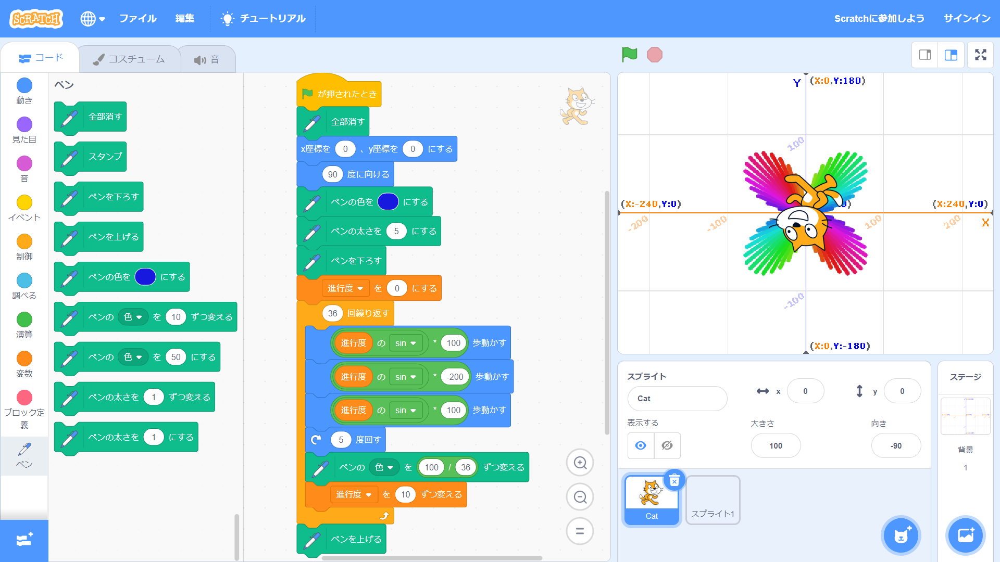
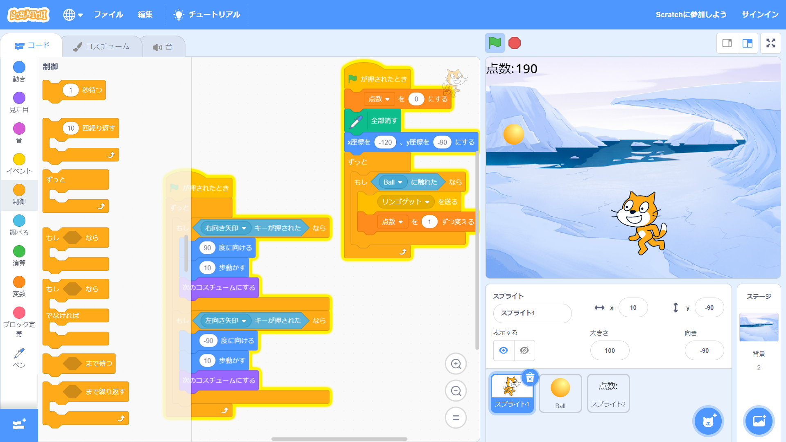

1週目のレポート ： 公大高専１年実習I-1
1B班28番 yyf999999999
第1週目
1-1 サイエンスアート

1.内容
スクラッチを使って線を書くプログラムを作った。変数を作成し、値を少しずつ変えてsin関数に入れることで進む長さを調節し、四つ葉のマークを作った。また、色の変え幅を調節して一周で色がちょうどになるようにした。
2.感想
線の長さを途中で変えてみたかったので試しにsin関数を使うと、想像以上にきれいな図形になった。また、変数の代わりに向きを用いればさらにプログラムを短くできそうに感じた。
1-2 ゲーム

1.内容
上から落ちてくるボールをゲットすると10点追加されるゲームを作った。もしブロックで左右矢印キーを認識することによって操作の遅延をなくし、得点をスプライトで表示することで見やすくした。
2.感想
イベントの代わりにもしブロックを使うことは簡単だったが、得点をスプライトで表示するのはかなり大変だった。得点の桁数は時間の都合上3桁までしか表示できるプログラムを作れなかった。
1-3 ホームページ作成
私のホームページ
1.内容
githubを使ってホームページを作った。しかし、タイトルや本文はまだ編集できていない。
2.感想
githubのアカウントを作る際、先生が話をしている間に先のことをしていてしまっていたため、アカウント名に学籍番号を入れてしまった。今後は、先生の話をよく聞きながら実習をしようと思った。